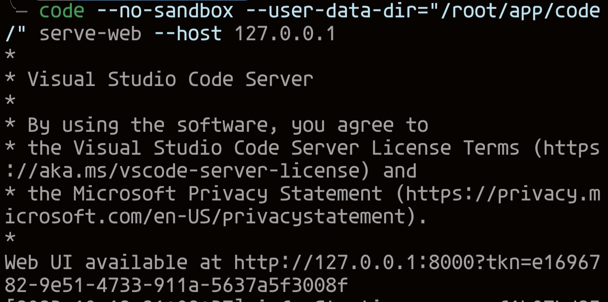
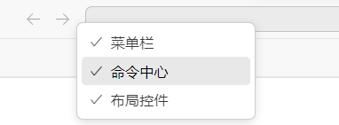

2023-10-12
5步教你在手机上使用 vscode ，真正具有生产力

小小的，也很可爱(‾◡◝)
这个方案应该是最优方案了（截止2023-10-12）。
其他绝大部分方案都是有坑的（但我不告诉你坑在哪😁
1. 给手机配一个能用的键盘
有那种蓝牙折叠式的键盘，方便携带
不配键盘就很难用来真正的生产代码。
2. 安装 Termux
应当从类似 F-Droid 的地方安装，不要从play商店安装（老旧且不再维护）。
3. 安装一个 linux 系统
使用 tmoe 安装 proot ( 没有root的情况下 ) 的 linux 系统 （你会其他的也行）
大致步骤：
bash
curl -LO https://l.tmoe.me/2.awk;
awk -f 2.awk
# 选 proot 容器 -> arm64发行版列表 -> Arch
安装完毕后在 termux 中输入 debian 即可进入刚安装的系统，还可以输入 tmoe 有很多有用的功能
4. 安装 vscode
为什么不用 code-server 呢，因为版本落后
在 arch 系统终端中输入
bash
pacman -S code
等安装完毕（如果有网络问题的话我相信你知道怎么解决，友情提示全局模式可以影响到termux）
输入：
bash
code --no-sandbox -user-data-dir="/root/app/code" serve-web --host 127.0.0.1
输出如下：

复制输出的链接去浏览器，还需要等待 code 下载服务端，依然可能需要你拯救网络
然后就可以使用了（才不是
5. 安装 Via 浏览器
开启全屏模式。
当你真正在浏览器中使用时你会发现即便是以pwa的形式安装后他仍然没有将页面占满
屏幕本来就这么小，还各种边栏，尤其是我的手机是挖孔屏，侧边直接一条黑边，太浪费了
Via 的全屏功能是最易用的。
最后右击顶栏，去掉菜单栏和命令中心（不能浪费一点屏幕空间），侧边栏视情况而定，例如我手机存在挖孔，那就不隐藏侧边栏了

然后你就可以得到题图那样的效果了
6. 探索 linux
你可以多玩玩 tmoe ，你会发现还可以通过 vnc 的方法（直接在arch系统中输入命令 startvnc）来使用，但其实vnc的界面并不如上面介绍的方式实际（对眼睛不友好）
但如果你是前端的话，可以开启 vnc 然后打开浏览器进行一些调试工作
7. 输入法最好选百度
答疑
您好，可以帮我解答一下第三步安装Linux是怎么操作的吗？最新的那篇安装vscode的文章，谢谢了